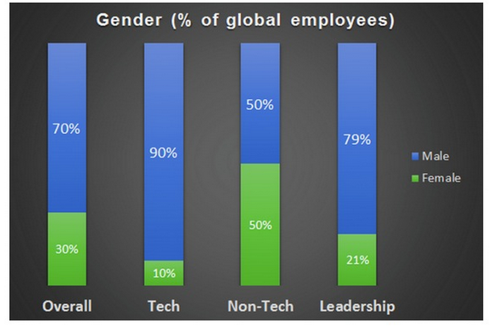

One of the big problems facing the Tech Industry today is the lack of diversity in the work force. The stereotypes say that Silicon Valley (and the tech industry as a whole is made up entirely of white males. Unfortunately, the data supports this stereotype.
Google recently released a break down of its 46,000 member global work force: 61% of their workforce is white, and only 30% are women. The numbers look even worse when you focus on their technical staffers, in which a whopping 83% are male.
Twitter also recently released a report with very similar finding in their own company:

Why is this a problem? To put it simply, because diversity is important. Different experiences and value systems help counter group thinking. Research shows that diverse groups are more creative and effective in solving problems. As Google puts it: “Having a diversity of perspectives leads to better decision-making, more relevant products, and makes work a whole lot more interesting.”
To their credit, Google has been trying to correct this problem for several years now. They have been running a series of workshops aimed at making Google’s culture more accepting of diversity. They also sponsor a series of programs aimed at trying to get more women into tech and they have also scrutinized their hiring practices to make sure they aren’t being bias against women or specific ethnicities.
The only problem is that they have no proof if any of these solutions are working. While I believe their efforts are having a positive impact on the tech industry as a whole, I think the problem is much deeper.
Learning how to code needs to become a fundamental part of our education system, right up there with English and Math. By exposing children to the tech industry at an early age, we may be able to spark an interest that will shape their career choices.
I also believe we to find the best female coder currently in the world and make her a celebrity. If even a fraction of the young girls who obsess over and inspire to be the next Kardashian could get that excited over a celebrity that actually adds value to the world, we could make a radical change in the tech industry. This will not happen until entering the tech industry is seen culturally as cool and exciting instead of geeky and weird. The right person made into a celebrity, could be the face of this change and illustrating the limitless possibilities and excitement the tech industry has to offer.
Thanks for reading.